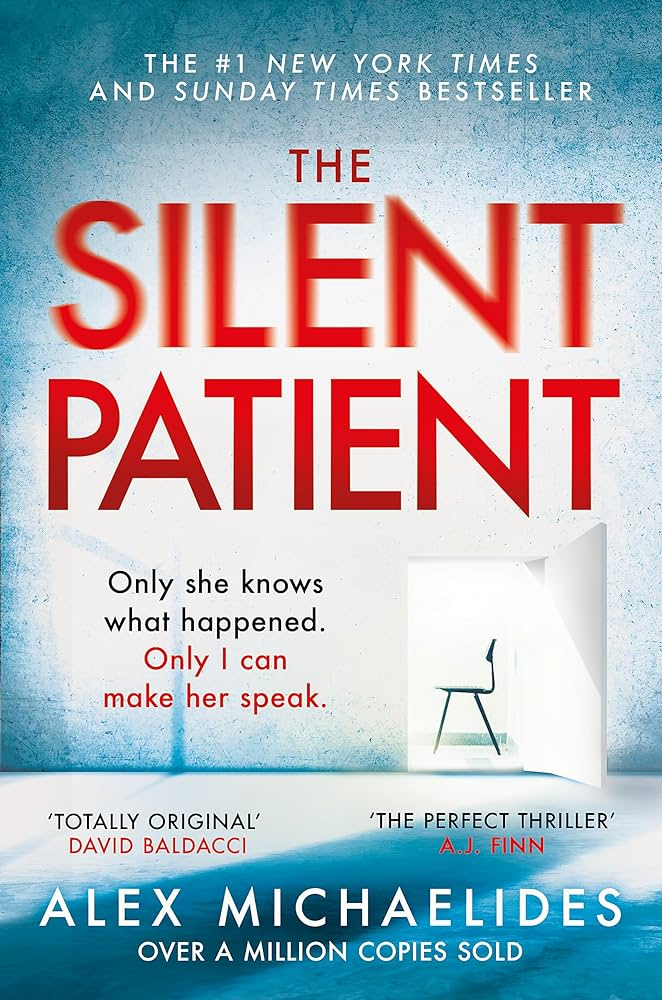

"Twisted Games" is the second installment in Ana Huang's Twisted series, following the story of Bridget von Ascheberg, a princess, and her bodyguard, Rhys Larsen. This contemporary
royal romance explores themes of duty, desire, and the complexities of forbidden love.
Key Characters
Bridget von Ascheberg: A strong-willed princess who dreams of freedom but is bound by royal duty. After her brother abdicates the throne, Bridget faces the pressure of a loveless
marriage and the responsibilities of leadership.
Rhys Larsen: A stoic and brooding elite bodyguard with a troubled past. He has two rules: protect his clients at all costs and never become emotionally involved. However, Bridget
challenges these rules.
Plot Summary
The story begins with Rhys assigned to protect Bridget, who is navigating her new role as a potential queen. As they spend time together, their initial animosity transforms into a
deep and passionate connection. Rhys finds himself breaking his own rules as he becomes increasingly drawn to Bridget, who is not just a royal but a woman with her own desires and
ambitions.
Bridget, meanwhile, struggles with the constraints of her royal duties and her growing feelings for Rhys. The tension between them escalates as they confront their emotions, leading
to a forbidden romance that could jeopardize both their lives and the stability of the kingdom.
As the plot unfolds, Bridget must balance her personal desires with her responsibilities, while Rhys grapples with his protective instincts and his longing for Bridget. Their
relationship is further complicated by political intrigue and the threat of a loveless marriage that Bridget is trying to avoid.
Themes and Tropes
The book features several popular romance tropes, including:
Forbidden Love: The relationship between a royal and her bodyguard is fraught with societal expectations and personal sacrifices.
Age Gap: Rhys is older than Bridget, adding complexity to their dynamic.
Character Growth: Both characters undergo significant personal development, learning to confront their fears and embrace their true selves.
Conclusion
"Twisted Games" is a captivating and steamy romance that combines elements of royal intrigue with deep emotional connections. Ana Huang's writing brings the characters to life,
making readers root for their love against the odds. The novel explores the balance between duty and desire, ultimately highlighting the transformative power of love.